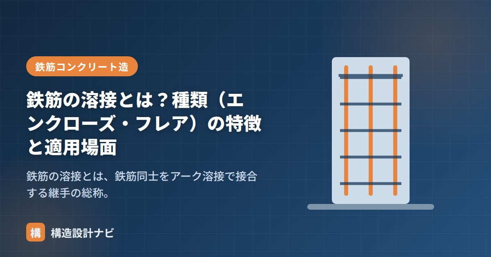

鉄筋の溶接とは？種類（エンクローズ・フレア）の特徴と適用場面

鉄筋の溶接とは、鉄筋同士をアーク溶接で接合する継手の総称です。鉄骨では溶接は一般的ですが、鉄筋の溶接が使われる場面は多くありません（鉄筋継手は重ね継手・圧接継手が主流のため）。この記事では、鉄筋の溶接の意味・代表的な2種類（エンクローズ溶接・フレア溶接）・特徴・適用場面を、告示の規定とあわせて整理します。
- 鉄筋の溶接は鉄筋継手のひとつ。主な種類はエンクローズ溶接とフレア溶接。
- エンクローズ溶接＝鉄筋端部の突合せ溶接（径25mm超の主筋に適用）。フレア溶接＝丸鋼の円弧状のすき間を利用した溶接で、杭頭補強筋の接合に使う。
- 規定は告示第1463号などにある。溶接部は欠陥がなく、母材以上の溶接材料を用いる。
鉄筋の溶接とは？
鉄筋継手の方法のひとつに溶接継手があります。鉄筋を溶接して継手とする方法ですが、実務で使う箇所はそれほど多くありません。鉄筋の継手は、一般に圧接継手や重ね継手を用いるためです。溶接は、これらが使いにくい特殊な納まり（杭頭補強筋など）で活躍します。
告示1463号の規定
鉄筋の溶接継手は、告示第1463号などに規定があります。主な内容を整理すると次のとおりです。
- 溶接継手は突合せ溶接とすること。ただし、径25mm以下の主筋等は重ねアーク溶接継手（フレア溶接）とできる（※公共建築工事標準仕様書では径16mm以下）。
- 溶接部は欠陥がないものとすること。
- 溶接される鉄筋の強度・性能以上の溶接材料を用いること。
鉄筋の溶接の種類
鉄筋の溶接には、おもに次の2種類があります。
- エンクローズ溶接：鉄筋の断面を突合せ溶接する方法。
- フレア溶接：丸鋼の円弧状のすき間（フレア）を利用した溶接。
エンクローズ溶接
エンクローズ溶接とは、鉄筋の断面（端部）を突き合わせて行う突合せ溶接です。溶接部の周囲を裏当て材で囲って（エンクローズ＝囲い込みして）アーク溶接することからこの名があります。
- 告示では、径25mmを超える主筋はエンクローズ溶接（突合せ溶接）が必要です。
- 開先はI型開先を用います。
フレア溶接
フレア溶接とは、丸鋼（鉄筋）の曲面どうし、または鉄筋と鋼板（鋼管）の間にできる円弧状のすき間（フレア）を利用して溶接する方法です。代表的な用途が杭頭補強筋の接合で、鋼管杭などに補強筋を溶接する際に使われます。

径の小さい鉄筋（告示で径25mm以下の主筋等、公共建築工事標準仕様書では径16mm以下）では、突合せ溶接に代えてフレア溶接（重ねアーク溶接継手）とできます。
鉄筋の溶接のまとめ表
| 項目 | 内容 | 備考 |
|---|---|---|
| エンクローズ溶接 | 鉄筋断面を突合せ溶接する方法 | 径25mm超の主筋に適用／I型開先 |
| フレア溶接 | 丸鋼の円弧状のすき間を利用した溶接 | 杭頭補強筋の接合に使用 |
| 重ね継手・圧接継手 | 一般的な鉄筋の継手方法 | 溶接継手より広く使われる |
鉄筋の溶接に立ち会う機会は、圧接や機械式継手に比べて実務ではかなり少ないというのが実感です。だからこそ杭頭補強筋のフレア溶接が図面に出てきたときは、施工者の資格・実績を普段以上に丁寧に確認します。
2種類の溶接継手（図解）
他の継手との比較
| 継手の種類 | 特徴 | 主な用途 |
|---|---|---|
| 重ね継手 | 鉄筋を重ねて付着で力を伝える。最も簡便 | D25以下が中心。一般的な部位 |
| ガス圧接継手 | 加熱・加圧して接合。全断面を確実に接合できる | D19以上の主筋。もっとも一般的な機械的継手 |
| 溶接継手 | アーク溶接で接合。技量への依存度が高い | 杭頭補強筋、圧接が困難な狭あい部 |
| 機械式継手 | カプラーやスリーブで機械的に接合 | プレキャスト部材、太径鉄筋、狭い場所 |
鉄骨では溶接が標準なのに、鉄筋ではほとんど使われないのには理由があります。①鉄筋は炭素当量が高く溶接性が良くない（急冷で硬化・脆化しやすい）、②現場の姿勢・環境が悪い（狭く、上向き・横向き溶接が多い）、③品質の確認が難しい（内部欠陥を非破壊で検査しにくい）——といった点です。そのため、確実性の高いガス圧接や重ね継手が主流となり、溶接はそれらが使えない特殊な納まりに限定されています。
よくある質問
Q1. 鉄筋の溶接に資格は必要ですか？
必要です。鉄筋の溶接作業は、日本鉄筋継手協会などが認定する技量資格を有する技能者が行います。溶接する鉄筋の径や溶接姿勢に応じて資格の区分があり、有効期限もあります。施工計画書には、従事する技能者の資格証の写しを添付するのが一般的です。無資格者による施工は認められません。
Q2. 溶接継手の検査はどのように行いますか？
外観検査と非破壊検査を組み合わせます。外観検査では、余盛りの形状・寸法、アンダーカットや割れの有無を目視で確認します。内部欠陥については超音波探傷試験が用いられますが、鉄筋は形状が複雑で探傷が難しいため、抜取りによる引張試験で確認することもあります。検査の方法と頻度は、施工計画で定めておきます。
Q3. 杭頭補強筋に溶接が使われるのはなぜですか？
杭の鉄筋かごと基礎の鉄筋を接合する部位で、圧接が困難な納まりになることが多いためです。杭頭では、既に打設された杭から突出した鉄筋に対して、限られたスペースで接合作業を行う必要があります。ガス圧接には所定の作業空間と鉄筋の軸合わせが必要ですが、これが確保しにくいため、溶接継手や機械式継手が選ばれます。
まとめ
- 鉄筋の溶接は鉄筋継手のひとつ。代表はエンクローズ溶接とフレア溶接。
- エンクローズ溶接は径25mm超の主筋の突合せ溶接、フレア溶接は杭頭補強筋の接合で一般的。
- 規定は告示1463号等にあり、溶接部は欠陥なし・母材以上の溶接材料を用いる。施工管理と検査が重要。
継手の全体像は「鉄筋継手の種類とは？」、圧接は「鉄筋の圧接（ガス圧接）とは？」、鉄筋を接触させない継手は「あき重ね継手とは？」をどうぞ。
※溶接継手の適用径・開先・検査の詳細は、告示・公共建築工事標準仕様書・各規準や年度の改定により異なる場合があります。実務では必ず採用基準の最新版をご確認ください。